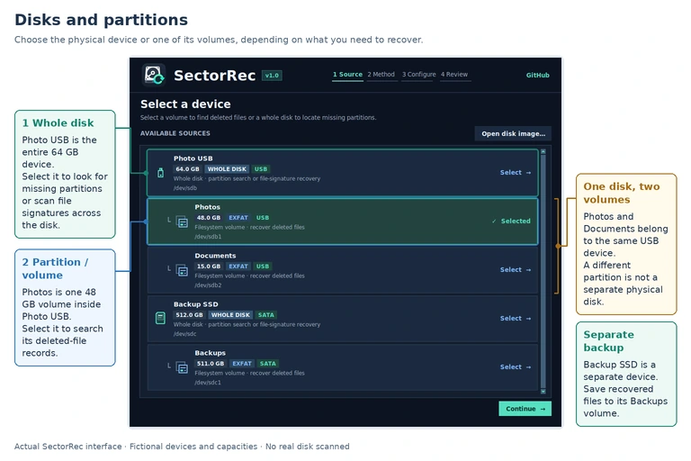
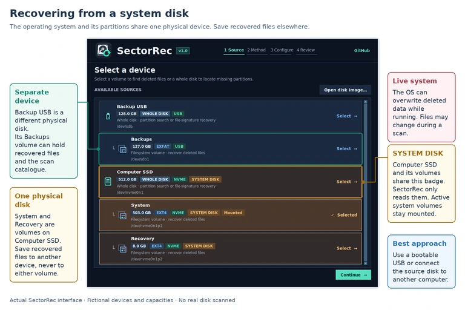
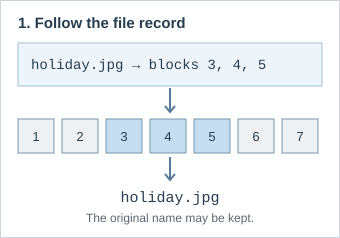
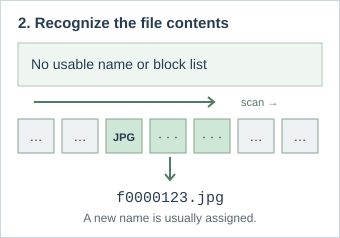
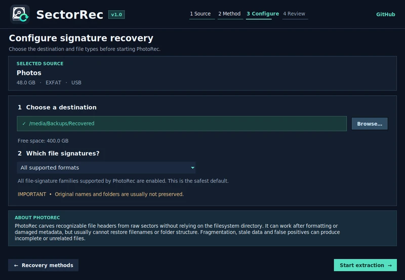
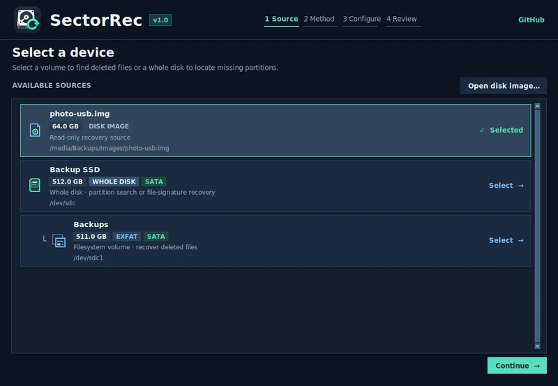
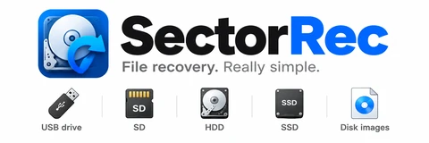

File recovery · A practical guide
How to recover deleted files
Lost a file, formatted a USB drive, or can't open a disk? Start with your situation below. You don't need to know how recovery tools work.
Jump to a section
Before anything else
Stop using the affected drive. Don't add files, install software on it, or agree to format it.
Check for an easy copy. Look in the Recycle Bin / Trash and your backups first.
Save somewhere else. Use a different physical drive, not another partition on the same one.
Drive clicking, disconnecting, or showing read errors? Don't keep restarting scans. See make a disk image; for serious physical damage or irreplaceable data, seek professional help.
What happened to your files?
Pick the closest situation. Each link takes you to the relevant advice.
Recover your files in 4 steps
Open SectorRec and select the source
Find the drive by its name and size. For deleted files, select the partition they were on. If you're unsure, see disk or partition?
Choose how to search
Start with Recover by metadata (Sleuth Kit) for deleted files. If it finds little, try Recover by signatures (PhotoRec). If a partition disappeared, use Find missing partitions (TestDisk). Compare the methods ↓
Pick a safe destination and start
Choose a folder on your other physical drive. Recover by signatures saves files during the scan; Recover by metadata lets you choose files afterwards.
Check what you recovered
Open important files, not just their thumbnails. A filename or preview doesn't guarantee the content is complete.


Whole disk or partition?
Partition: a section of a drive (like C: or Photos). Choose it for deleted files. Whole disk: the complete device. Choose it when a partition disappeared or when you need a full image.


Files lost from Windows C: or your Linux system disk?
The computer keeps writing to its system disk even when you're not saving anything. That can overwrite deleted files. Best option: recover from another computer or a live USB.


How to use a live USB (3 steps)
- On another computer, prepare a Debian/Ubuntu live USB. Ubuntu's guide ↗
- Boot the affected PC from that USB and choose Try Ubuntu (or equivalent). Avoid mounting or repairing the affected disk.
- Run the compatible Linux desktop edition of SectorRec. Connect a second external drive for recovered files and follow the 4 steps.
Important: a temporary live session may have limited space for scan data. Keep working files on suitable writable storage and recovered files on the separate destination before shutting down.
Note: SectorRec disables disk imaging and lost-partition searches on the active system disk. To use those features, boot from another drive.
Recover files from a USB drive or SD card
1.Unplug the USB stick or stop using the SD card in your camera or phone.
2.Connect it to your PC, ideally through a card reader. Don't format it if prompted.
3.Scan the recognizable partition with Recover by metadata (Sleuth Kit). If it finds little, try Recover by signatures (PhotoRec).
For videos, check playback from beginning to end: a recovered thumbnail doesn't mean the whole video survived.
Formatted drive or “You need to format the disk”?
Cancel the format prompt. A drive shown as RAW is one Windows can't currently read as a normal filesystem. That does not always mean the files are gone.
Drive or partition missing?
Find missing partitions (TestDisk) may locate it.
Partition visible, but folders unreadable?
Recover by signatures (PhotoRec) can search for files.
After a quick format, recovery may be possible if data remains. A full overwrite or secure erase cannot be reversed. Recover files before attempting repairs.
Which recovery method should I choose?
You don't need to know the tools beforehand. Choose based on what you can still see on the drive.
Recover by metadata (Sleuth Kit)
Use when: you deleted files and the partition still appears normally.
What you get: a list to browse, often with original names and folders. Choose what to recover after the scan.
Recover by signatures (PhotoRec)
Use when: file records are missing, the drive was formatted, or Recover by metadata found too little.
What you get: photos, documents and other recognized files, usually without original names. They are saved during the scan.
Find missing partitions (TestDisk)
Use when: a partition has disappeared, or the disk looks unallocated.
What you get: possible partitions to inspect. SectorRec doesn't rewrite the partition table.

See the difference with a real-looking example


Example: Recover by metadata might show holiday.jpg; Recover by signatures may save it as f0000123.jpg. Neither can restore missing or overwritten data.
Recover by signatures (PhotoRec): should I filter file types?
All supported formats is the simplest starting point. Choose a narrower group only if you want to focus on certain kinds of files. These groups aren't exact extension filters, and Recover by signatures may also find older copies or files that were never deleted.


Want to protect the original? Make a disk image
A disk image is one large file containing a copy of a drive. You can scan that copy instead of repeatedly reading the original.
On supported Linux desktop builds, SectorRec uses GNU ddrescue to copy readable areas and resume interrupted copies. For a full image, the destination needs at least the capacity of the source drive, plus space for recovered files.

How to resume an interrupted image
Keep the image file (.img), its copy progress file (.img.map) and the source information (.img.source.json) together. Reconnect the same drive, open Create disk image, then choose Resume an incomplete image…. SectorRec checks the source before resuming.
How to scan an existing .img / .dd / .raw file
Choose Open disk image… in SectorRec. Select the image and choose a recovery method as usual. You do not need to mount it. Linux desktop also offers optional read-only mounting for browsing files.


Important: if a drive clicks, repeatedly disconnects, or isn't detected, software imaging may make things worse. A recovery specialist is safer for important data.
Using SectorRec on Linux or Windows
Download the edition for the computer running SectorRec, not for the filesystem on the drive. For example, Windows can scan a Linux-formatted disk if the recovery engine supports its filesystem.
Windows 10/11 (64-bit): use the installer or portable EXE. Windows may request administrator access for physical drives.
Linux (AMD64 / ARM64): choose the compatible desktop package. Linux desktop can also mount suitable disk images read-only.
Features depend on the package and platform; in particular, disk image creation and scanning an existing image are different operations. See the editions and downloads.
Can my files actually be recovered?
Sometimes, yes
Deleted files may still be present until their space is reused. A quick format may also leave old contents readable.
Sometimes, no
Overwritten or securely erased files cannot be rebuilt. On SSDs, TRIM can make deleted contents unreadable very quickly.
A file appearing in the results is not a guarantee. Verify the recovered copy. Encrypted files also need the proper key.
Quick answers
Can I recover files deleted from the Recycle Bin?
Possibly. Emptying the Bin doesn't always erase the file contents immediately. Stop using the drive and try Recover by metadata (Sleuth Kit) first.
Should I recover to D: instead of C:?
Only if D: is on a different physical disk. Two partitions on the same SSD are not separate recovery destinations.
Can I recover files without their original names?
Recover by signatures (PhotoRec) can find recognizable file contents, but usually saves them under generated names.
Can I recover files if my PC no longer boots?
Often worth trying. Use another PC or a live USB to access the disk. Don't reinstall Windows or Linux on the affected disk first.
How long does a scan take?
It depends on drive size, connection speed and read errors. A whole-disk Recover by signatures scan usually takes longer than scanning one partition.
What if a recovered photo or video won't open?
Its name may have survived while parts of its data didn't. Try the other method, but neither can restore overwritten content.
Further reading
Optional technical references from the recovery tool authors:

Ready to recover your files?
Free, open source, and guided on screen.